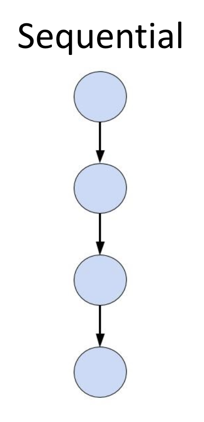
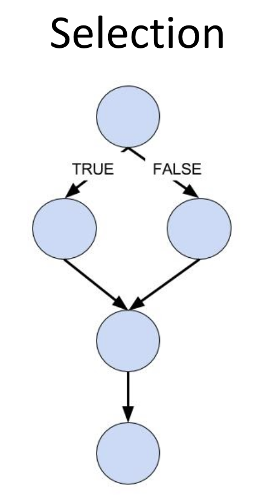

Lesson 1 - Booleans and Comparison Operators
At the end of this lesson, you will be able to:
- Explain how a selection structure changes the flow of a program.
- Write Boolean expressions using comparison (relational) operators.
Two ways a program can flow
So far, every program you've written has run straight down the page - top to bottom, one line after another. That's called a sequential structure, and it's the simplest way code can flow.

But programs get interesting when they can make choices - do one thing in one situation and something different in another. That's a selection structure: the program asks a true-or-false question and takes a different path depending on the answer. This whole unit is about teaching your programs to make decisions.

The true-or-false question a program asks is called a conditional expression (or just a "condition") - something like "is the gas tank below 2 gallons?" or "is this grade at least 70?" Before we can write the decisions themselves, we need to learn how to write those questions.
Boolean values: true and false
A question like "is 5 greater than 3?" has only two possible answers: True or False. In programming, those two values are called Boolean values (named after the mathematician George Boole, who worked out the logic of true/false reasoning back in the 1800s - long before there were computers to run it). An expression that evaluates to True or False is a Boolean expression.
Comparison operators
You build Boolean expressions with comparison operators (also called relational operators). They compare two values and give back a Boolean. You already know most of them from math:
| Operator | Meaning |
|---|---|
| > | Greater than |
| < | Less than |
| >= | Greater than or equal to |
| <= | Less than or equal to |
| == | Equal to |
| != | Not equal to |
 Bug Alert - one equals vs. two: Remember from Unit 3 that a single
Bug Alert - one equals vs. two: Remember from Unit 3 that a single = is the assignment operator ("store this value"). To compare two things for equality, you need two equals signs: ==. Mixing these up is one of the most common beginner bugs. x = 5 stores 5 in x; x == 5 asks "is x equal to 5?"
Run this program and look at the True/False answer each comparison produces:
def main():
x = 8
y = 3
z = 8
print('x == y\t', x == y)
print('x > y\t', x > y)
print('x < y\t', x < y)
print('x == z\t', x == z)
print('y <= z\t', y <= z)
print('x != z\t', x != z)
main()Predict each answer before you run it. (With x = 8, y = 3, z = 8: is x == y? No, False. Is x > y? Yes, True. And so on.)
Coming up next: Now that you can ask a true-or-false question, the next lesson shows you how to act on the answer with the if statement - running some code only when a condition is true.